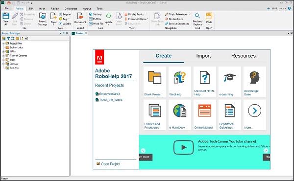

Olem - Määratletav asi - näiteks inimene, objekt, mõiste või sündmus, mille kohta võib andmeid salvestada. Mõelge olemitele kui nimisõnadele. Näited: klient, õpilane, auto või toode. Tavaliselt kuvatakse ristkülikuna.
Olem - Määratletav asi - näiteks inimene, objekt, mõiste või sündmus, mille kohta võib andmeid salvestada. Mõelge olemitele kui nimisõnadele. Näited: klient, õpilane, auto või toode. Tavaliselt kuvatakse ristkülikuna.

Adobe Robohelp on populaarne Adobe'i spikri loomise tööriist (Help Authoring Tool ehk HAT).
Seda kasutavad tööstusharu spetsialistid, et pakkuda kaasahaaravat abisisu, e-õppe ressursse,
organisatsioonipoliitikat ja teadmistebaasi artikleid laiale vaatajaskonnale sõltumata seadme vormist.
Funktsioonid:
Ühe klõpsuga reageeriv HTML5 avaldamine:
Kiire ja lihtne Dropboxi toega jagamine ja koostöö
Kasutaja määratud muutujate (UDV) skript
Kohandatavad tingimuslikud ehitussildid (CBT)
Kohandatud päised ja jalused trükitud dokumentides